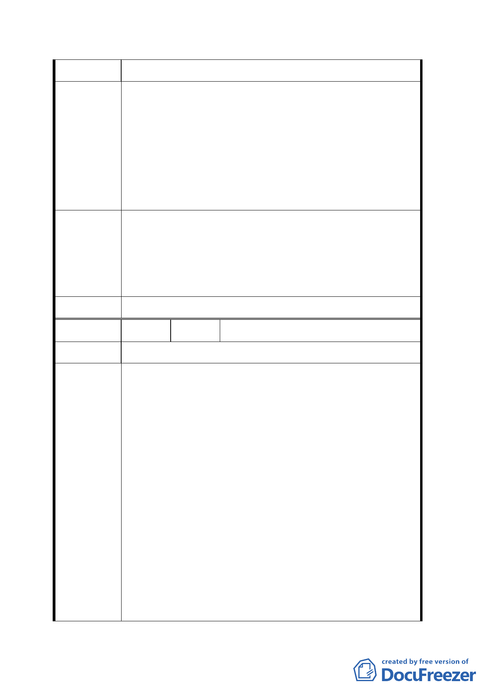

街以北地區之商業發展。
一、已整備好之大客車直接由市民高架橋進入，此案應最
受周遭居民及得標廠商之歡迎，既不影影響平面車
流，亦能將基地完整開發，並促進本地之繁榮。
建議辦法
二、建議將大客車入口處設於市民大道面，該面已有市民
大道高架，既不影響景觀，亦無其餘衍生之種種不良
後遺症。
一、陳情人所提訊息有誤，規劃單位於承德路側所擬大客
專案小組審
車進場方式係採下坡道方式進入地下室，而非沿華陰
查結論
街側設置上坡道。
二、所提建議錄請市府參考辦理。
委員會決議 同專案小組審查結論。
編 號 ４ 陳情人 台北車站社區發展協會
陳情理由
一、日勝科技公司於中華民國九十三年八月二十六日已向
本地區居民做過說明會，大家對此計畫案均樂見其
成，希望能夠及早順利施行。
二、希望政府能做好工安的監督工作，以避免附近居民施
工期間受到損害。
三、大客車行經的路線廢氣排放應妥善處理，請排放於沒
建議辦法
有居民的市民大道方向，切勿設置於華陰街面，以維
護地區居民的空氣品質。
四、本案容積率增加達 40％，應撥一定比例之空間，給社
區協會作為集會及活動之場所，以回饋社區居民。
五、設於華陰街之計程車停車彎，如待客車輛太多恐佔據
華陰街街面，必定嚴重妨礙交通，建議應設置於承德路面
二二